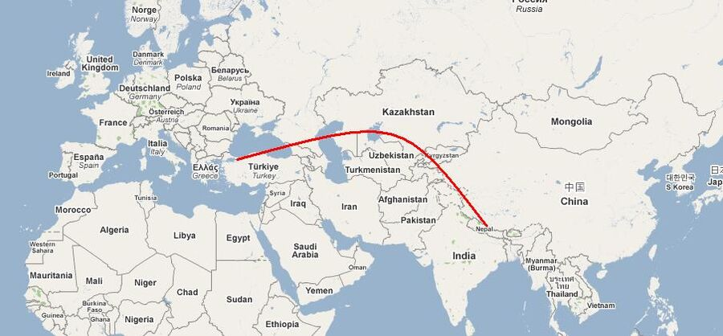

Zuerst ein paar Infos zur Tour:
Mein Freund Ralf kommt mit. Damit ist die Chance, dass wenigstens einer von uns zurückkommt, deutlich höher :)
Erster Halt ist Kathmandu in Nepal. Die Tour dauert 22 Tage und ist mittelschwer.
Der höchste Punkt, den wir erreichen, ist das Mount Everest Base Camp auf etwa 5.550 Metern. Das ist das Höchste, was man Anfängern wie uns erlaubt. Keine Chance, höher zu kommen. Jedenfalls diesmal nicht :)